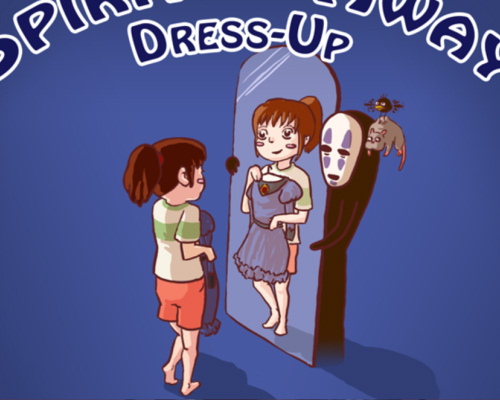
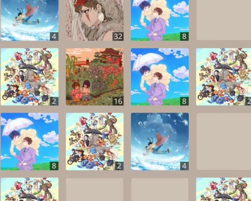
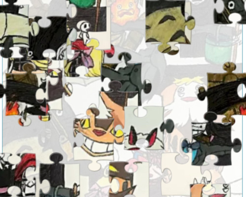
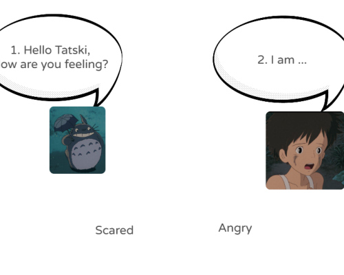

¡Más juegos!
¡Aquí tienes una lista con otros juegos de navegador con temática de Studio Ghibli, para no dejar de divertirte!




¡Aquí tienes una lista con otros juegos de navegador con temática de Studio Ghibli, para no dejar de divertirte!